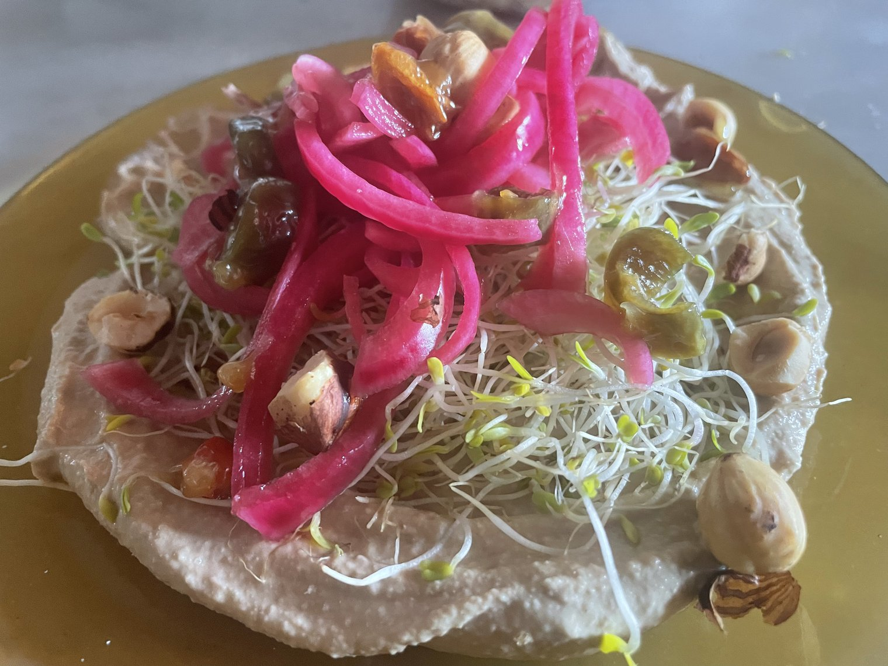

Hummus de lenteja con brotes, cebolla encurtida, chile en aceite y avellanas
Ingredients
2×
- 250 g de lentejas cocidas
- 1 cda de tahini
- el zumo de 1/2 limón
- 1 diente de ajo
- 2 cdas de aceite de oliva
- sal
- 1 puñado de brotes
- cebolla encurtida
- 1 cdta de chile en aceite
- 1 puñado de avellanas

Preparación
Paso 1
Triturar 250 g de lentejas cocidas con 1 cda de tahini, el zumo de 1/2 limón, 1 diente de ajo, 2 cdas de aceite de oliva y sal, añadiendo un poco de agua hasta que quede cremoso.
Paso 2
Extender en un plato y poner por encima 1 puñado de brotes, cebolla encurtida, 1 cdta de chile en aceite y 1 puñado de avellanas.